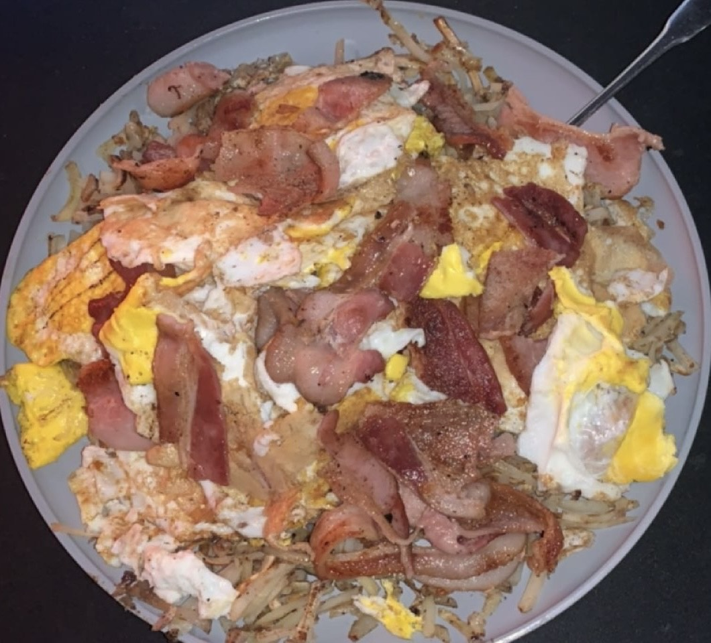

Hashbrown Plate

Description
Above features a hashbrown plate comprised of eggs, hashbrowns and bacon. It is very simple but super good and has tons of protein.
Ingredients
Steps
- Grab however many eggs, bacon and hashbrowns you want to use
- On one side of the grill turn it on high and set the hashbrowns on it
- On the other side turn the grill on between low and medium and put the bacon on it
- Every 3 minutes or so flip the hashbrowns to make sure they get really good and crispy
- Let the bacon cook for a while they will normally be good about when the hashbrowns are done
- Once the hashbrowns and bacon are done put the bacon on the side where the hashbrowns are
- Turn the side of the grill that the bacon used to be on to the high setting
- Crack your eggs on to that side
- Let the eggs sit for a little then flip them
- You can repeat this process until the eggs are cooked to your liking
- Once done get a plate and put the hashbrowns on then stack the bacon and the fried eggs onto the hashbrowns
- Grab your fork and enjoy your simple meal!